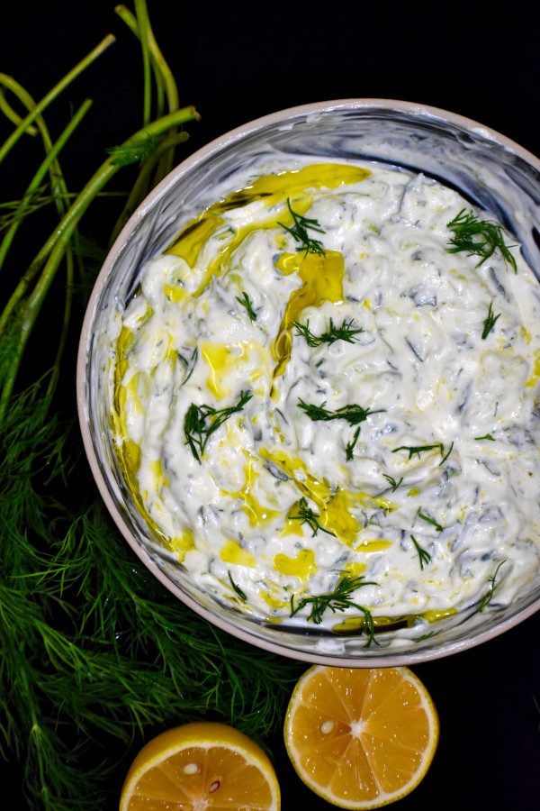

Tzatziki
(The dip that keeps the vampires away!)

Tzatziki is the most popular garlicky cucumber Greek yogurt sauce, dip of spread
(call it whatever you like) in Greece! It's mostly served with grilled meats and gyros.
It's also extremely easy to make.
Personal opinion: The most garlic the better,
but not everyone is like me, so always keep your guest in mind.
(I learned that the hard way!)
Ingredients
- 300gr greek yogurt
- 1 cucumber
- 1 clove of garlic
- 2 tbsp extra virgin olive oil
- salt
- dill
Instructions
-
Grate cucumbers and sweat them. To sweat them, add the grated cucumbers
to a colander, toss with 1/2 tsp of salt and let it rest for 10-15 minutes.
Rinse out the salt and the squeeze out most of the water by hand.
-
Combine all of the ingredients in your bowl and give it a good stir to combine everything.
Taste and adjust to you taste.
-
Chill for at least an hour before serving.
Back to homepage